Hướng dẫn sử dụng KOL Studio
Ứng dụng Windows chuyên dựng video ngắn dọc (TikTok, Reels, Shorts) với timeline đa lớp tốc độ cao, chữ và mẫu quảng cáo sắc nét, kết hợp AI giọng đọc tiếng Việt (clone giọng offline miễn phí), phụ đề nhảy theo từng từ và lồng tiếng tự động.
Cài đặt & Mở ứng dụng lần đầu
-
Tải bộ cài một file duy nhất
KOL-Studio_<phiên-bản>_x64-setup.exetừ trang phát hành github.com/minhhy19/kol-studio-phat-hanh/releases/latest (hoặc nhận trực tiếp file.exetừ chủ dự án). - Bấm đúp để cài đặt. Nếu Windows SmartScreen hiện bảng xanh "Windows đã bảo vệ máy tính của bạn" (do bộ cài chưa mua chứng chỉ thương mại), bấm Thông tin thêm (More info) → Vẫn chạy (Run anyway).
- Mở KOL Studio từ Start Menu hoặc biểu tượng Desktop.
ffmpeg để dựng và xuất video
bằng GPU ngay lập tức. Phần AI (giọng đọc, phụ đề Whisper, tách nhạc nền) chỉ tải thêm khi bạn bấm vào tab AI lần
đầu để bộ cài gốc luôn gọn nhẹ.
Trang chủ dự án & Thử ngay với Dự án mẫu 5 giây
Khi mở KOL Studio, bạn vào Trang chủ dự án. Mọi dự án bạn tạo đều được tự động lưu liên tục trong lúc dựng (không cần bấm nút Lưu).
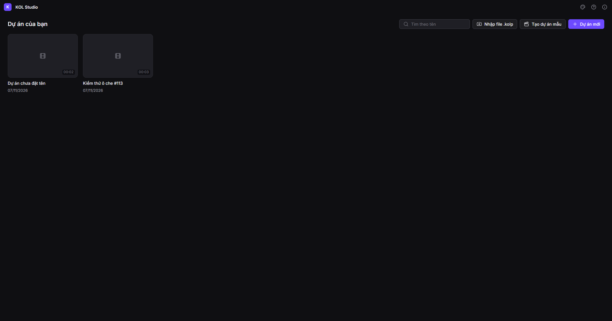
Thử mọi thao tác trong 1 giây với "Tạo dự án mẫu"
Nếu bạn vừa cài máy và chưa có sẵn video, chỉ cần bấm nút Tạo dự án mẫu trên Trang chủ. App sẽ tự
sinh một dự án dọc 9:16 dài 5 giây rồi mở thẳng vào Editor:
- 2 cảnh nền chuyển màu trên track chính.
- Chữ khuyến mãi "GIẢM 50%" hộp đỏ có hiệu ứng phóng vào và mờ ra trong vùng an toàn TikTok.
- 2 câu phụ đề có mốc từng từ, từ đang đọc tự phóng to và đổi sang màu vàng.
- Nhạc nền hợp âm nhẹ (−19 dB, êm tai khi bấm Space nghe thử).
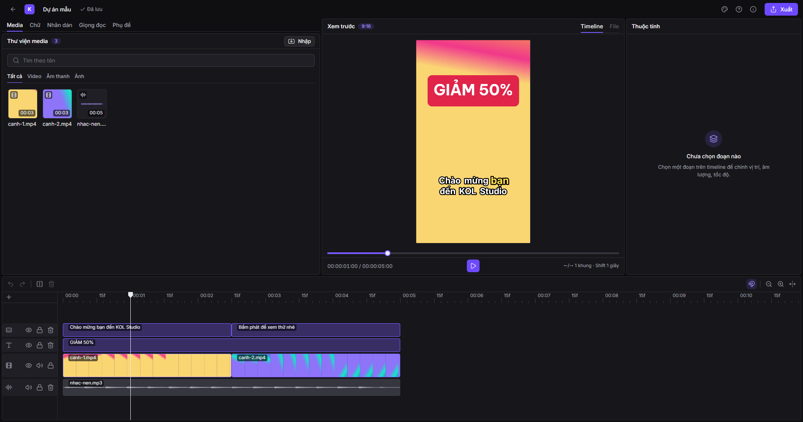
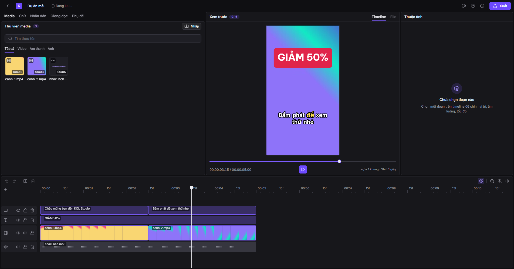
Mở và chuyển dự án sang máy khác (file .kolp)
-
Xuất dự án: Ở Trang chủ, bấm nút ⋯ trên thẻ dự án →
Xuất file .kolp. Lưu ý: file
.kolpchỉ lưu cấu trúc timeline và đường dẫn, không nhét video gốc vào trong — khi chép sang máy khác, hãy chép kèm các file video/nhạc để cạnh file.kolp, app sẽ tự nối lại. -
Mở lại: Bấm đúp trực tiếp vào file
.kolptrong Windows Explorer, kéo thả vào Trang chủ, hoặc bấm Nhập file .kolp.
Bố cục Editor 5 vùng & Thao tác trên Timeline
Màn hình dựng video chia thành 5 vùng co giãn được bằng thanh kéo:
1. Thanh trên cùng (TopBar)
Nút quay về Trang chủ, đổi tên dự án tại chỗ, trạng thái "✓ Đã lưu", nút ? (Hướng dẫn & Phím tắt), nút i (Thông tin ứng dụng & Gói AI), Hàng đợi xuất và nút Xuất.
2. Cột trái (5 tab công cụ)
Media (nhập & lọc video/ảnh/nhạc), Chữ (kiểu chữ & mẫu quảng cáo), Nhãn dán (emoji, ảnh, ô che), Giọng đọc (TTS & clone giọng), Phụ đề (Whisper, dịch, lồng tiếng).
3. Khung xem trước (Preview)
Chuyển đổi giữa xem Timeline đa lớp và xem từng File trong thư viện. Cho phép kéo, co giãn, xoay lớp phủ/chữ trực tiếp trên hình và bấm đúp để sửa chữ tại chỗ.
4. Cột phải (Thuộc tính)
Tự đổi theo đối tượng đang chọn: chỉnh Vị trí (X, Y), Tỉ lệ, Góc xoay, Độ mờ, Cách đặt khung (Phủ kín / Vừa khung), Âm lượng, Tốc độ phát (0.25× – 4×), hoặc Kiểu chữ / Kiểu phụ đề / Ô che.
Thao tác chính trên Timeline (Vùng 5)
- Thêm vào timeline: Kéo media từ Thư viện thả xuống timeline. Thả lên trên track chính sẽ tạo track lớp phủ (PIP).
- Cắt & Tách: Kéo 2 mép trái/phải của clip để cắt bớt đầu/cuối; đặt đầu phát tới vị trí cần cắt đôi rồi bấm Ctrl+B (hoặc biểu tượng cái kéo trên thanh công cụ timeline).
- Track chính tự khép khoảng trống: Xoá hoặc rút ngắn cảnh trên track chính thì các cảnh sau tự dồn sát lại để video không bị hở màn đen.
- Quản lý Track: Ở đầu mỗi track bên trái có nút Ẩn/Hiện (con mắt), Tắt tiếng (loa), Khoá track (ổ khoá), và kéo đổi thứ tự chồng lớp giữa các track chữ / lớp phủ.
Chữ, Mẫu quảng cáo, Nhãn dán & Ô che thông tin
Tab Chữ & Thư viện Mẫu quảng cáo dựng sẵn
Mở tab Chữ ở cột trái: bạn có thể thêm kiểu chữ cơ bản hoặc chọn ngay các Mẫu quảng cáo dành cho KOL (Flash Sale, Giảm giá, Giá sốc có gạch ngang giá cũ, Mua ngay, Đánh giá sản phẩm…). Mọi phông chữ đều hỗ trợ đầy đủ dấu tiếng Việt và hiển thị giống hệt 100% giữa khung xem trước và video xuất ra.
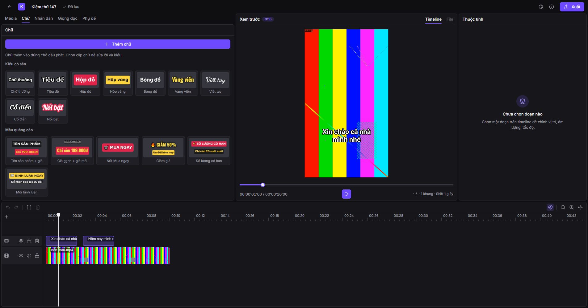
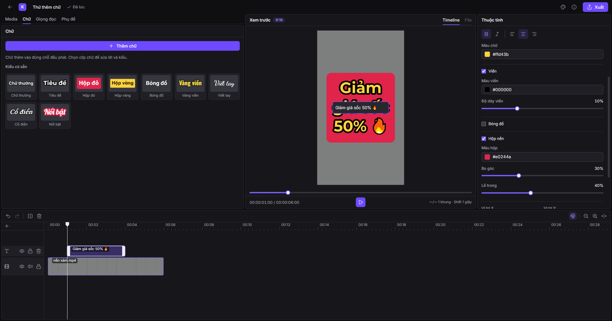
Tab Nhãn dán: Emoji, Ảnh PNG & Ô che (Làm mờ / Che màu / Khảm Pixel)
Mở tab Nhãn dán để chèn biểu tượng cảm xúc (Emoji), nhập ảnh nền trong suốt (logo, khung viền PNG), hoặc thêm Ô che để giấu số điện thoại, địa chỉ, biển số xe, logo nhãn hàng khác:
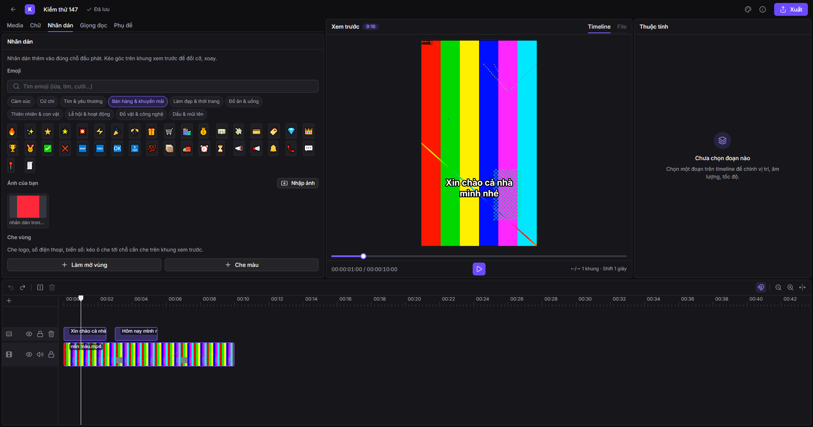
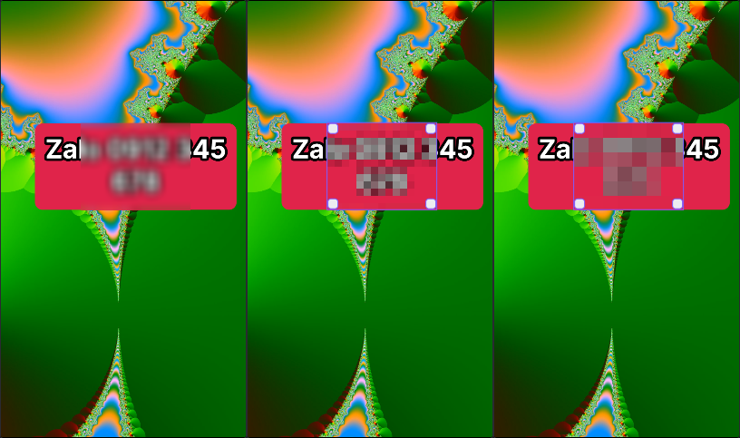
AI Giọng đọc tiếng Việt & Clone giọng cá nhân
Lần đầu tiên bạn mở tab Giọng đọc hoặc Phụ đề, nếu máy chưa cài gói AI, app sẽ hiện thẻ Tải gói AI (~500 MB tải về, có thanh tiến độ và nút Huỷ). Sau khi tải xong một lần, dịch vụ AI tự động bật ngầm mỗi khi bạn dùng và tự giải phóng RAM sau 5 phút nghỉ.
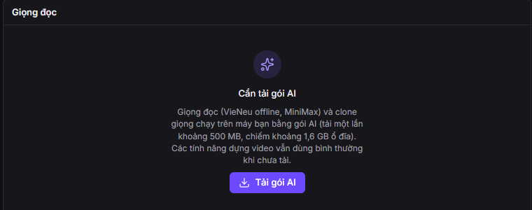
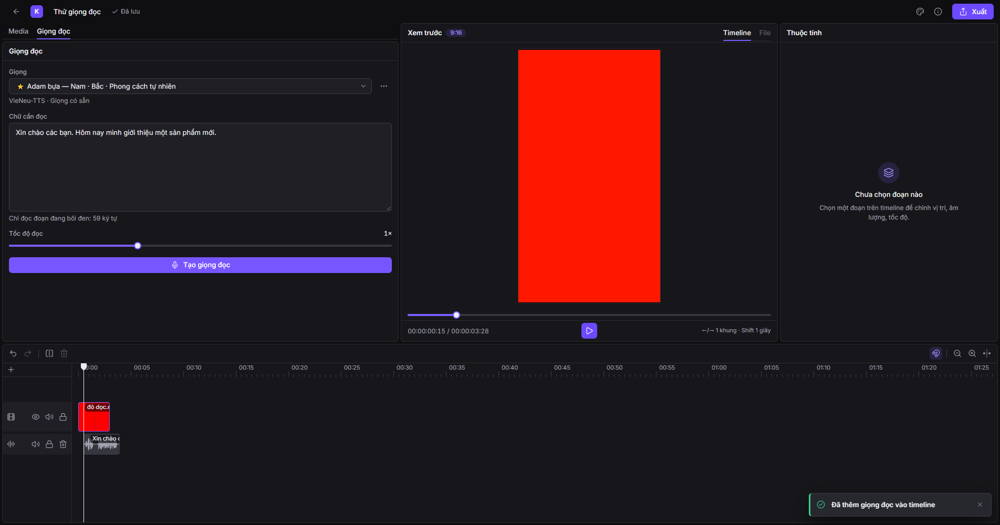
Nhân bản giọng nói (Clone giọng) từ mẫu 3–15 giây
- VieNeu-TTS (Offline, miễn phí 100%): Chạy trực tiếp trên CPU/GPU máy bạn, chuyên tiếng Việt, chỉ cần file mẫu thu âm sạch từ 3–10 giây kèm câu văn bản của mẫu đó.
- MiniMax (Cloud): Cần nhập API Key trong phần cài đặt; trước khi dùng giọng tính phí hoặc clone giọng, ứng dụng luôn hỏi xác nhận rõ ràng kèm số ký tự.
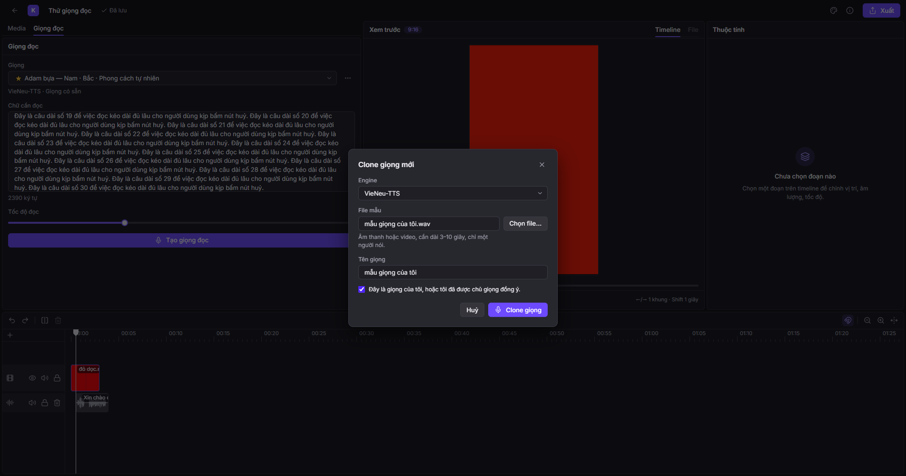
AI Phụ đề nhảy theo từng từ, Tách giọng, Dịch & Lồng tiếng
Tab Phụ đề giúp bạn xử lý trọn gói phần lời thoại của video:
-
Tạo phụ đề tự động (Whisper): Nhận diện tiếng Việt/ngoại ngữ ra từng câu phụ đề trên track
Phụ đềkèm mốc thời gian chính xác của từng từ. - Chữ nhảy / tô màu theo từng từ đang đọc: Chọn một câu phụ đề → ở cột Thuộc tính, bật chế độ tô từ (Đổi màu, Phóng to từ đang đọc, hoặc Hộp nền chạy theo từ) giống phong cách TikTok/CapCut.
- Tách giọng / Nhạc nền: Bấm Tách giọng để AI tách âm thanh gốc thành 2 track riêng biệt (Giọng nói và Nhạc nền), rất tiện khi bạn muốn giữ nhạc nền gốc nhưng thay lời lồng tiếng mới.
- Dịch phụ đề & Lồng tiếng theo phụ đề: Dịch toàn bộ phụ đề sang ngôn ngữ khác (hoặc từ ngoại ngữ về tiếng Việt) rồi bấm Lồng tiếng để AI đọc khớp từng câu phụ đề trên timeline.
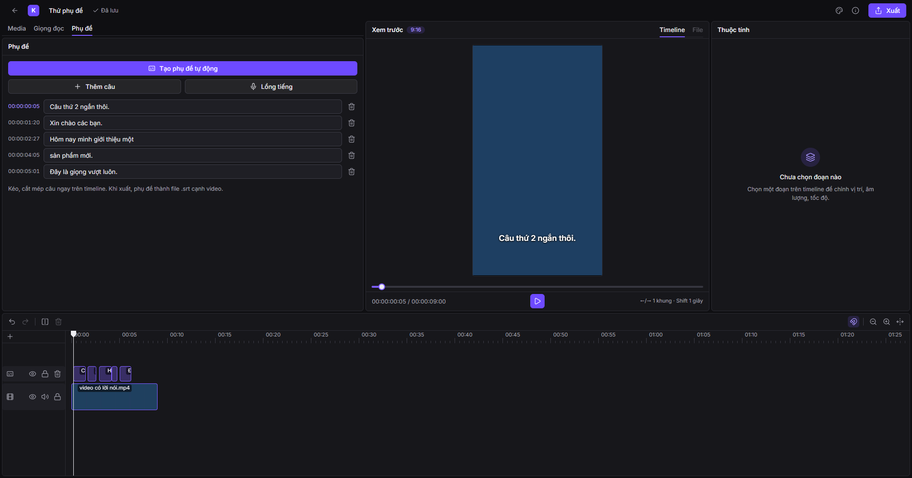
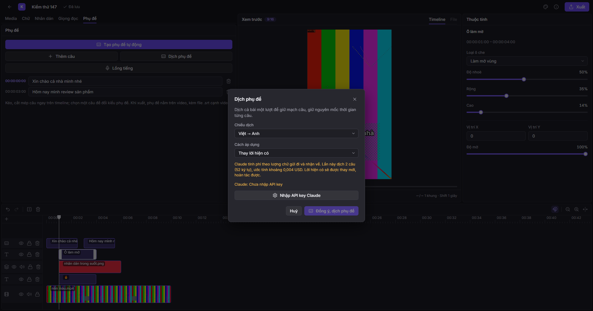
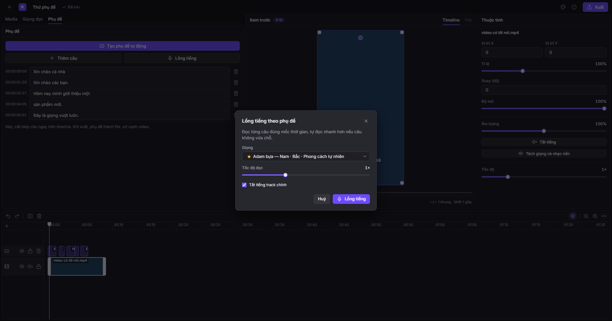
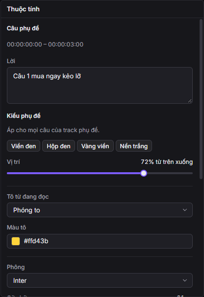
Xuất video & Hàng đợi xuất nền bằng GPU
Khi dựng xong, bấm nút Xuất màu tím ở góc phải trên cùng:
- Chọn Độ phân giải (1080p chuẩn TikTok, 720p, 4K…) và Chất lượng.
-
Tuỳ chọn Cháy phụ đề vào hình (vẽ phụ đề trực tiếp lên video) — đồng thời file phụ đề rời
.srtluôn được xuất kèm cạnh file.mp4. - App tự động chọn bộ mã hoá phần cứng GPU (AMD AMF, NVIDIA NVENC, Intel QSV) và nhớ trên đĩa; nếu GPU gặp sự cố, app tự chuyển sang CPU để đảm bảo xuất thành công.
- Nhiều video có thể xếp vào Hàng đợi xuất (biểu tượng cạnh nút Xuất) để chạy lần lượt ở nền trong khi bạn tiếp tục sửa dự án khác.
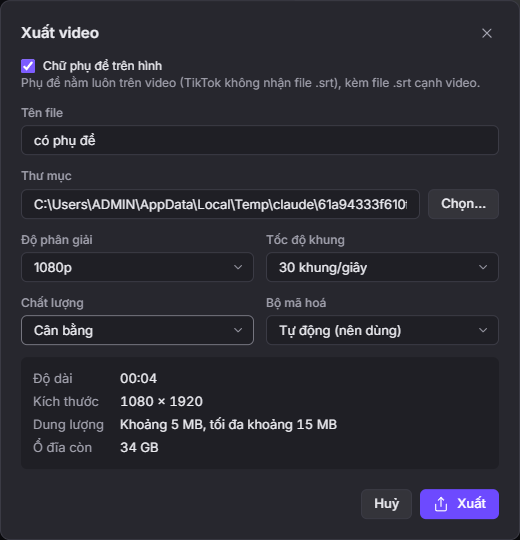
Cho AI tự dựng video qua MCP (Claude Desktop / Claude Code)
Ngoài việc tự dựng trên giao diện, KOL Studio tích hợp sẵn MCP Server để trợ lý AI (như Claude Desktop hoặc Claude Code) nhận ảnh sản phẩm + kịch bản từ bạn và tự dựng ra video hoàn chỉnh, tự kiểm tra khung hình, âm lượng, vùng an toàn TikTok rồi cho phép bạn mở lại ngay trong Editor để tinh chỉnh thêm.
- Đảm bảo đã tải Gói AI (xem mục 5).
- Bấm nút i (Thông tin ứng dụng) trên thanh trên cùng → tại dòng Kết nối AI (MCP), bấm Chép cấu hình MCP.
-
Mở Claude Desktop (Settings → Developer → Edit Config), dán vào file
claude_desktop_config.jsonrồi khởi động lại Claude Desktop. - Gửi ảnh sản phẩm và yêu cầu cho Claude, ví dụ: "Dựng video TikTok 20 giây giới thiệu sản phẩm từ 3 ảnh này, giọng nữ miền Nam, có phụ đề và chữ khuyến mãi".
Bảng Phím tắt & Tìm kiếm nhanh (nhấn ? hoặc F1 trong app)
Trong ứng dụng, bạn có thể nhấn phím ? hoặc F1 bất cứ lúc nào (khi không gõ chữ trong ô nhập) để mở hộp thoại Hướng dẫn & phím tắt. Bạn cũng có thể tra cứu trực tiếp ngay dưới đây:
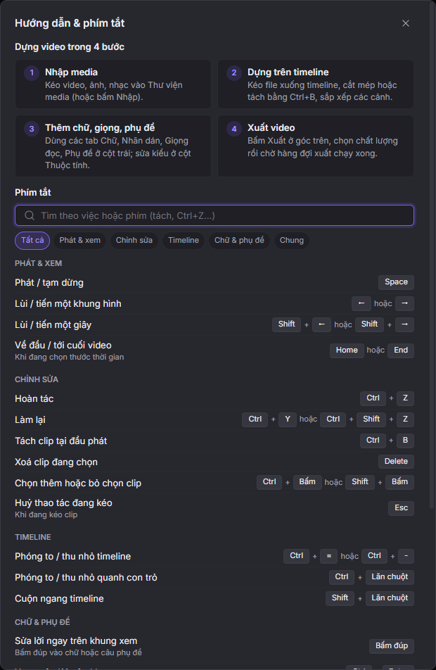
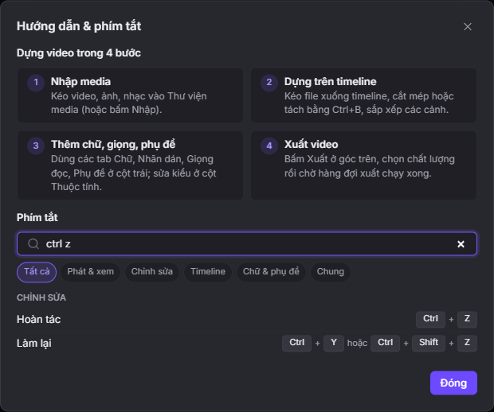
| Nhóm | Thao tác | Phím tắt / Thao tác chuột |
|---|
Tự cập nhật ứng dụng, Quản lý dung lượng & Xử lý lỗi
Bấm nút i (Thông tin ứng dụng) ở góc phải trên cùng để kiểm tra phiên bản mới, quản lý dung lượng bộ nhớ đệm / model AI, hoặc xuất gói chẩn đoán khi cần hỗ trợ kỹ thuật:
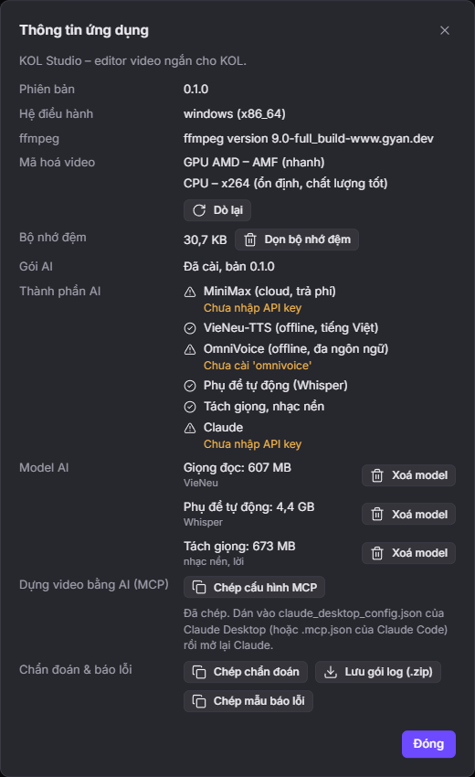
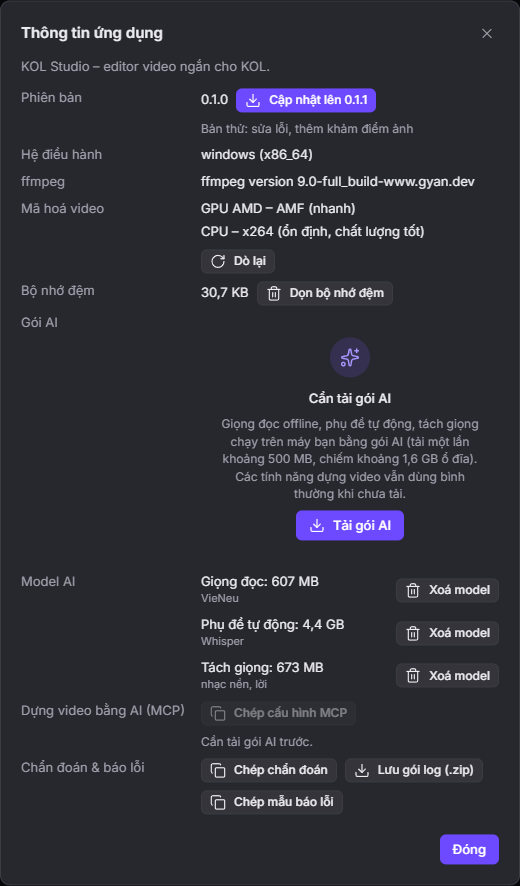
Bảng tra cứu lỗi thường gặp
| Dấu hiệu | Nguyên nhân & Cách xử lý |
|---|---|
| Video có tiếng nhưng hình đen, hoặc hiện "Đang tạo bản xem trước" | Video quay từ iPhone (HEVC) hoặc định dạng ProRes/AVI mà WebView của Windows chưa phát trực tiếp được. App đang tự tạo bản xem trước H.264 ở nền — chỉ cần chờ thanh tiến độ chạy xong. Khi xuất video vẫn dùng file gốc. |
| Ô media hoặc clip hiện Mất file | File video/nhạc gốc đã bị đổi tên, di chuyển hoặc xoá ngoài ổ đĩa. Bấm vào ô đó trong Thư viện media (hoặc chuột phải) để chọn lại vị trí file mới. |
| Thông báo "Không lưu được dự án" |
Ổ đĩa C: bị đầy hoặc mất quyền ghi. Dữ liệu vẫn còn trên màn hình và app tự thử lưu lại; hãy mở
Thông tin ứng dụng (nút i) → bấm Dọn bộ nhớ đệm hoặc Xoá model
để giải phóng dung lượng ổ đĩa.
|
| Xuất video báo lỗi giữa chừng |
App tự động thử xuất lại bằng bộ mã hoá CPU nếu trình điều khiển GPU gặp lỗi. Nếu vẫn lỗi, hãy mở lại hộp
thoại Xuất và chọn rõ bộ mã hoá CPU (libx264), đồng thời kiểm tra dung lượng trống ở thư mục lưu.
|
| Giọng clone MiniMax biến mất | Dịch vụ cloud MiniMax tự xoá giọng clone nếu không phát sinh lượt đọc trong 7 ngày. Hãy clone lại từ file mẫu (hoặc dùng giọng VieNeu offline để lưu vĩnh viễn trên máy). |
Nơi lưu dữ liệu trên máy Windows
| Đường dẫn thư mục | Nội dung |
|---|---|
%APPDATA%\vn.kolstudio.desktop\du-an |
Toàn bộ dự án của bạn (mỗi dự án 1 thư mục gồm du-an.json và ảnh bìa). |
%APPDATA%\vn.kolstudio.desktop\media-mau |
3 file media tự sinh dùng chung cho các Dự án mẫu. |
%APPDATA%\vn.kolstudio.desktop\logs |
Log xoay vòng của lõi Rust và dịch vụ AI. |
%LOCALAPPDATA%\vn.kolstudio.desktop\goi-ai |
Gói môi trường Python & thư viện AI tải theo nhu cầu. |
%LOCALAPPDATA%\vn.kolstudio.desktop\media |
Bộ nhớ đệm: ảnh thu nhỏ, dạng sóng, bản xem trước proxy H.264 (xoá an toàn bằng nút Dọn bộ nhớ đệm). |
Dành cho Chủ dự án: Đóng gói & Kích hoạt trang Release công khai
github.com/minhhy19/kol-studio-phat-hanh hiện báo 404 Not Found?Repo mã nguồn chính
minhhy19/kol-studio của bạn đang để Private (riêng tư) để bảo mật
code. Vì người dùng cuối và trình tự cập nhật trong app không thể tải file từ repo Private nếu không có tài khoản
của bạn, PR #152 thiết kế cơ chế đẩy file cài đặt .exe và gói AI sang một repo Public (công khai)
tên là minhhy19/kol-studio-phat-hanh (chỉ chứa file bản cài trong mục Releases, không chứa mã nguồn).
Repo công khai này cần bạn bấm tạo 1 lần duy nhất.
Cách 1: Thiết lập một lần để tự động phát hành & tự cập nhật trên GitHub (Khuyên dùng)
-
Tạo repo phát hành công khai (chỉ mất 5 giây bằng lệnh
gh):gh repo create minhhy19/kol-studio-phat-hanh --public --description "Bản cài đặt KOL Studio cho Windows" -
Đặt 2 Secret vào repo
minhhy19/kol-studio:-
TAURI_SIGNING_PRIVATE_KEY: nội dung của file khoá ký tự cập nhật đã được tạo sẵn trên máy bạn tại%USERPROFILE%\.tauri\kol-studio-cap-nhat.key(nhớ sao lưu file này ở nơi an toàn). -
RELEASE_TOKEN: Personal Access Token của GitHub có quyềnContents: Read and writetrên repominhhy19/kol-studio-phat-hanh.
gh secret set TAURI_SIGNING_PRIVATE_KEY --repo minhhy19/kol-studio < "%USERPROFILE%\.tauri\kol-studio-cap-nhat.key" -
-
Mỗi lần phát hành bản mới (ví dụ
v0.1.0):
Workflowgit tag -a v0.1.0 -m "Bản phát hành KOL Studio 0.1.0" git push origin v0.1.0.github/workflows/release.ymlsẽ tự build bộ cài NSIS có chữ ký số, đóng gói AI, tạolatest.jsonvà đăng cả 5 file lênhttps://github.com/minhhy19/kol-studio-phat-hanh/releases/latest.
Cách 2: Đóng gói file .exe trực tiếp trên máy để gửi ngay (Zalo / Google Drive)
Nếu muốn xuất ngay file cài đặt trên máy mà chưa cần đẩy tag GitHub:
cd desktop
npm run build:nsis
File cài đặt hoàn chỉnh (đã kèm sẵn ffmpeg.exe và ffprobe.exe) nằm tại:
desktop\src-tauri\target\release\bundle\nsis\KOL Studio_0.1.0_x64-setup.exe